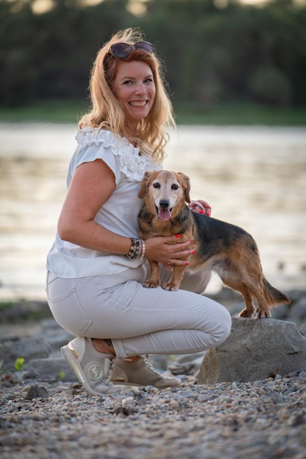

A kilométerek becsült közúti távolságok, nem hivatalos menetadatok. A program és az indulási idők változhatnak.
Repülőjáratok
A repülési időpontok a magyar TENSI utaslevél alapján szerepelnek. A tényleges menetrend változhat.
Hasznos tudnivalók
📍 Indulás és elérhetőségek
November 11., 12:40 · Budapest Liszt Ferenc repülőtér, 2B terminál, indulási oldal, Tensi Holiday tábla.
Tensi ügyelet: +36 70 45 45 555
Claudia, csak az indulás napján: +36 70 941 1810
🛂 Úti okmányok és határátlépés
Érvényes útlevél, ausztrál beutazási engedély és új-zélandi NZeTA szükséges lehet. A kiutazás előtt mindenki ellenőrizze saját dokumentumait. Mindkét országban szigorú biosecurity-ellenőrzés van: az élelmiszereket, növényi és állati eredetű termékeket szükség szerint be kell jelenteni. A túracipő legyen tiszta!
🧳 Poggyász
Emirates: feladott 30 kg, kézipoggyász 7 kg. Qantas: MEL–CNS 23 kg, a többi felsorolt Qantas-szakaszon 30 kg feladott poggyász. Air New Zealand CHC–ROT: 23 kg. A pontos méreteket és feltételeket a jegyen ellenőrizzétek; értékek és gyógyszerek a kézipoggyászba kerüljenek.
💳 Pénz és konnektor
Ausztrália: AUD; Új-Zéland: NZD. A bankkártya mindkét országban széles körben használható. Mindkét országban I típusú konnektor van; adapter szükséges. Bal oldali közlekedésre számítsatok!
☀️ Öltözködés
Melbourne: réteges ruházat, esőkabát. Cairns: könnyű ruha, fürdőruha, UV-védelem. Uluru: kalap, víz, zárt cipő, légyriasztó. Sydney: kényelmes sétacipő. Új-Zéland: szél- és vízálló kabát, meleg réteg, csúszásmentes túracipő. A hegyvidéken és Milford Soundnál hűvös, esős idő is lehet.
🕒 Időeltolódás Magyarországhoz képest
Utazásunk idején (november–december) Magyarországon téli időszámítás van. Ha Budapesten 12:00 van, akkor a helyi idő:
- Melbourne és Sydney: 22:00 – +10 óra
- Cairns: 21:00 – +9 óra
- Uluru (Északi Terület): 20:30 – +8 óra 30 perc
- Új-Zéland: másnap 00:00 – +12 óra
- Dubai: 15:00 – +3 óra
Fontos: Ausztrálián belül is eltér az idő! A telefon általában automatikusan átáll, ha az automatikus időzóna-beállítás engedélyezett.
📱 Offline használat
Nyisd meg ezt az oldalt internet mellett, várd meg a betöltést, majd add a telefon kezdőképernyőjéhez. A program és a beépített illusztrációk internet nélkül is megmaradnak; a valódi helyszíni fényképek külső oldalainak megnyitásához internet szükséges. Az időjárás és a napkelte/napnyugta az utoljára sikeresen lekért adatokkal jelenik meg.
A tájékoztatás a Tensi utaslevelének kivonata; a hivatalos utazási dokumentumokat nem helyettesíti.

Ismerjétek meg az idegenvezetőtöket – Zsarnóczay Claudia
18 éve járom a világot idegenvezetőként, és még mindig ugyanazzal a lelkesedéssel indulok útnak, mint az első alkalommal!
Az utazás és a világ felfedezése a szenvedélyem. Hiszem, hogy minden utazás többé tesz bennünket: gazdagítja a tudásunkat, nyitottabbá és elfogadóbbá tesz, és miközben más kultúrákat ismerünk meg, sokszor önmagunkról is új dolgokat tanulunk.
Különösen közel áll hozzám Délkelet-Ázsia és az Egyesült Államok, ezekre a területekre vezetem a legtöbb csoportomat. De őszintén szólva nincs olyan hely a világon, ahová ne indulnék el szívesen!
Ausztráliával tíz évvel ezelőtt kezdődött a különleges kapcsolatom. Akkor Görögországban dolgoztam egy ausztrál piacra specializálódott utazási irodánál, ahol szinte kizárólag ausztrál kollégákkal és utasokkal vetett össze a sors. Rengeteget tanultam az ausztrál kultúráról, gondolkodásmódról és életstílusról. Ráadásul volt egy új-zélandi, kiwi kolléganőm is, akitől néhány igazán vicces új-zélandi angol kifejezést is elleshettem!
Amikor éppen nem úton vagyok, szívesen ülök lóra, vagy sétálok a kiskutyámmal. Hatalmas állatbarát vagyok: nálam szinte minden négylábú, tollas vagy szőrös jöhet egy kis simogatásra – feltéve, hogy nem mérgező!
És hogy mi a legfontosabb célom egy-egy utazáson?
„Legfontosabb célom, hogy még ha idegenekként is indulunk útnak, jó barátokként térjünk haza!”
Mert a legszebb emlékek nemcsak a látványos helyekről, hanem az együtt átélt pillanatokról, a közös nevetésekről és az útközben születő barátságokról szólnak.
Tartsatok velem, fedezzük fel együtt Ausztráliát és Új-Zélandot!